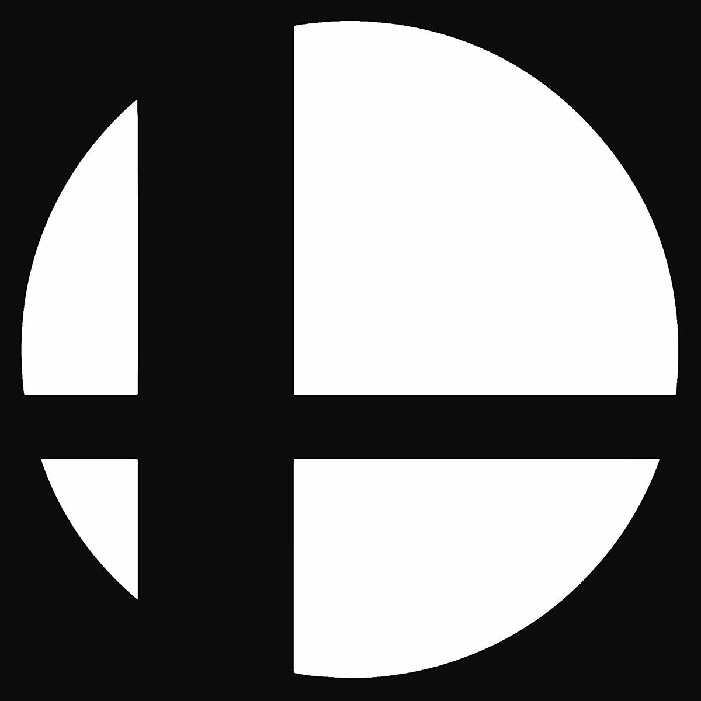
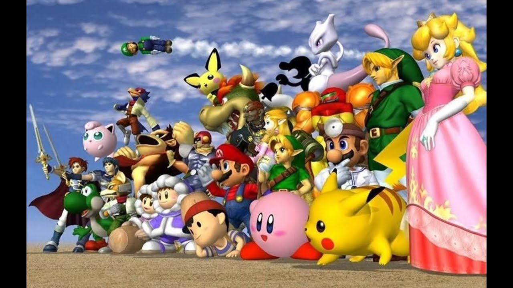

What is Super Smash Brothers?
Super Smash Bros. is a party game series created by Masahiro Sakurai that brings together gamings most iconic characters to fight. Currently there are
five entries in the series. The first game was Super Smash Bros. for the Nintendo 64 then Super Smash Bros. Melee for the Nintendo Gamecube
then Super Smash Bros. Brawl for the Nintendo Wii next was Super Smash Bros. for Nintendo 3DS and Wii U and the newest addition to the series was
Super Smash Bros. Ultimate for the Nintendo Switch.

What is Super Smash Bros. Melee?
Super Smash Bros. Melee (SSBM) was one of the most revolutionary games of its age. It was critically acllaimed on release for the games addition of
new content better graphics and with a fully orchestrated music track. Not only that but it sold 7 million copies the highest selling game on the
Nintendo Gamecube.
However instead of it being remembered today as a fantastic party game released on the Gamecube it is known as one of the most popular fighting games for
its complexity difficulty ceiling and fast gameplay.

Navigation Bar Information
- The Competitive Players tab will give you information about the top 10 players of 2019 and will you give you information on each player and where to find the list
of the top 100 players from the last 6 years.
- The Ruleset tab will tell you the rules that competitive players use for tournaments.
- The Competitive Techniques tab will inform you of all the competitive techniques that are used in today metagame and links on how they work and how to practice them.
- The Tier Lists tab will give you a list of popular tier lists from top players from each year since competitive Melee has started.
- The History tab will give you a run down on the history of competitve Melee and give you a links to videos that cover this history as well.
- The Character Data tab will tell you each character in the roster and also frame data for the moves that have changed the meta of the game.
- The Practice Tools tab will give you resources to help you practice for competitive Melee and also how to play online against other players.
- The Tournaments tab will give you resources to help you find tournaments in your area and how to get connected with your local scene.
- The COVID Changes tab will tell you how COVID-19 has impacted the competitve Melee scene and how we have adapted to people playing.